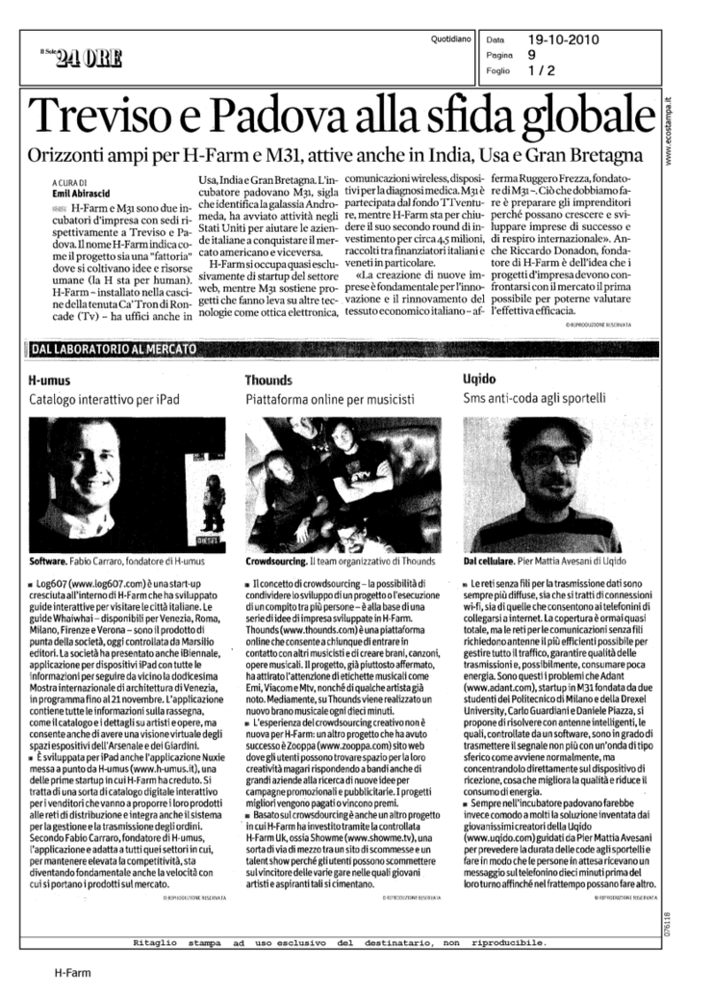

Giovanni Cappellotto is an eclectic artist and technology innovator.
He worked for some of the most advanced technology companies in Italy such H-Farm, Thounds, and Addictive.
His projects set new standards in the fields of UX and interaction design, and they are used every day by thousands of people.
Introduction to Node.js, a platform built on Chrome's JavaScript runtime for easily building fast, scalable network applications.
Node.js uses an event-driven, non-blocking I/O model that makes it lightweight and efficient, perfect for data-intensive real-time applications that run across distributed devices.
References:
GitUp is a crowdfunding platform that helps developers to get funds for their open source projects.
The project has been selected between hundreds of ideas and was a finalist in the Startup Weekend competition held in Talent Garden Brescia.
References:
Thounds was a music collaboration social network born in 2009. The service was free and simple, registered users can record their music.
The project counted more than 30k users before shut down in 2012.

Giovanni Cappellotto won Nokia's first price at Hackitaly first edition, a contest for hackers, designers, and makers.
Giovanni and his team, built in less than 8 hours a mashup using Thounds API and Nokia Here Maps API to geolocalize sounds inside of an interactive map.
Italy's H-Farm is an incubator with ideas – and it's coming to London - TechCrunch
Tomatoes is a time tracker and a web-based Pomodoro Technique timer.
The project has more than 50k unique monthly visitors, more than 15k active users, more than 150 stargazers on GitHub, and helped people track about 34 years of work.
References:
The Best Chrome Apps You're (Probably) Not Using
Pomodoro Web App Tomato.es Is Time Management Made Simple
A jQuery plugin to show a list of Instagram photos.
The project has more than 400 stargazers on GitHub.
References:
jQuery Roundup: Instagram jQuery Plugin, jQuery.handleStorage, Morse.js
The Best Instagram jQuery Plugins
10 Handy jQuery Instagram Plugins
Draw! is a web-based pixel art animation editor. It is unique because its peculiar constraints, you can use only 16 colors to draw at most 16 frames that are 16 x 16 pixels big, allows users to free their creativity in unexpected ways.
The project has more than 25k active users that drew more than 50k pixel art animations that together count more than 12.8M pixels.
References:
DrawBang: Draw 16 x 16 Animated Pictures Online
Drawbang – Crea sencillos gifs animados estilo Retro
This web app allows you to tell the world how you feel about an Internet resource, a place or other people in the Smood it network. Just answer a simple question: what mood are you in?
The idea born during a competition called Storming Pizza held in H-Farm. Giovanni Cappellotto's prototype of Smood it won the first price on the second edition of the competition and the project counted more than 10k users before shut down in 2012.
Giovanni Cappellotto pitching Smood it.
Giovanni Cappellotto, founder of Smood it, taking the first price from Maurizio Rossi, founder of H-Farm and judge of the competition.
Exclusive Interview: Smood it Founder, Giovanni Cappellotto
Share and Tweet Your Emotions with Smood.it
Fork 'n' roll is a multitrack recorder. You can share a song page URL with your friends and start to play together.
The project ended up in the top 10 for the innovation category at NodeKO 2013, a contest where more than 1000 teams have challenged writing Node.js applications.
References:
A game concept for Android devices. Two opponents, who taps faster wins.
References:
My entry for the Ludum Dare 28, a game design contest. The game ended up in the top 100 leaderboard for innovation between more than 4000 video games.
References:
I'm the co-founder of Meme Coworking, the first public coworking place in Treviso, Italy.
Meme Coworking born in June 2012 from an idea of Giovanni Cappellotto and Francesco Fraioli. Now the coworking place hosts more 8 coworkers and is a the perfect place for public events and training courses.
References:
Coworking, uffici di gruppo contro la crisi
Dividere spazi e spese: anche a Mogliano l'esperimento del coworking
I'm the president and co-founder of Hackatron, a community of hackers, designers, and programmers based in Treviso.
The idea born when I left H-Farm, after Thounds shut down. Hackatron makes it easy for hackers working for startups growing in H-Farm to stay connected and to share their knowledge in a easy way. The community has more than 250 users and organizes events and meetings about design and tecnology.
References: